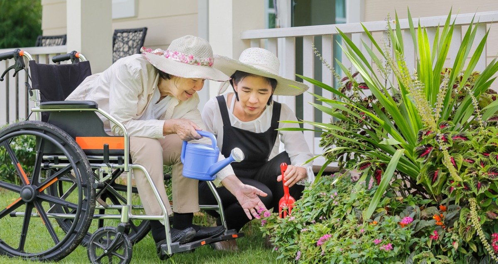
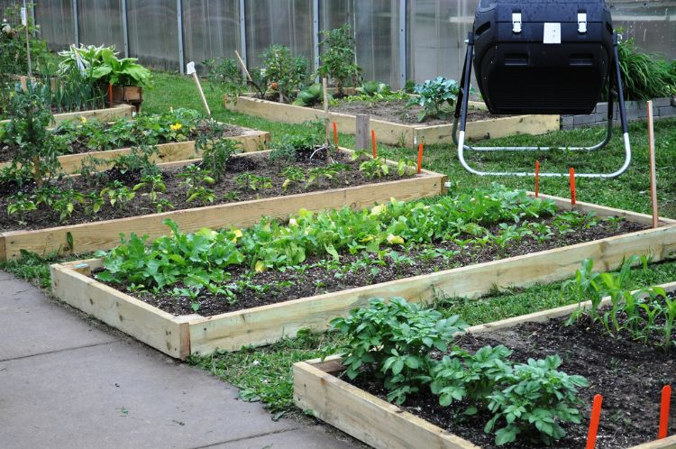
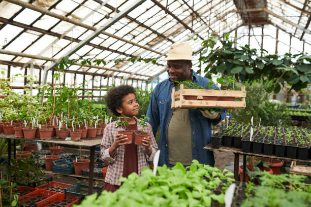

Gardening for seniors and people with disabilities

Gardening can offer a myriad of health benefits for people with disabilities and seniors by providing exercise, friendships, stimulation and relaxation. With some planning and consideration, an accessible, productive and pleasant garden can be developed.
Garden structures and equipment need to be carefully designed and chosen to accommodate people with disabilities. Raised containers and vertical gardens are popular options to make a garden area more accessible. Older people or those with back and posture problems may also find these types of garden set-ups appealing.
Gardening for small places

When growing in a small space, it’s hard to fight the temptation to plant too many things. Plants that are too close together end up competing for nutrients and light and a dense plant canopy can lead to more disease pressure. So, fewer plants that are properly spaced will actually give you a better yield than squeezing many plants in the same space.
With that in mind, avoid planting things like pumpkins and winter squash in a small garden - these crops take up a lot of space and are easy to find at farmers markets later in the summer. Stick to smaller plants to grow a wider variety of things.
Family gardening activities

It’s National Children’s Gardening Week! So with that in mind and seeing all the lovely gardens on display at Chelsea last week and watching the Cambridge’s playing in the Duchess of Cambridge’s back to nature garden, it has motivated me to share with you how we have been gardening with the kids activities this month. We are lucky to have a good outdoor space at our house, but being a property that is rented through Dougie’s employment, we haven’t done much gardening with it yet. So I decided that this year we would make a few cheap changes to the large area of grass and make it more fun and enticing for little gardeners and for myself. I have heard that gardening is a really good mindful activity to do and as we love to be outside, I thought it a great activity to share with the little ones. I’m also keen to provide a little nature haven at the same time as planting, so I have included some ideas on that at the end of this post. Some of these gardening ideas can even be done with a small outdoor space, park or even a windowsill, so don’t dismay if you haven’t got a garden in your own home or many tools.